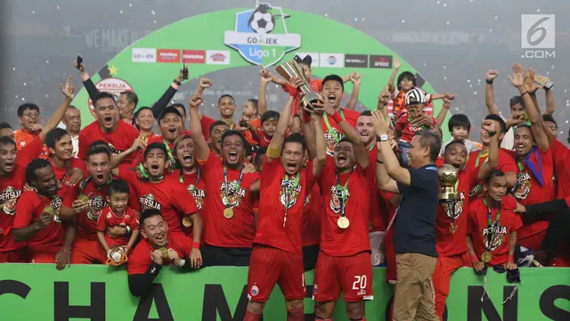

Sejarah

Persija Jakarta memiliki sejarah panjang yang dimulai sejak
didirikan pada tanggal 28 November 1928. Klub ini berasal dari
Jakarta, Indonesia, dan merupakan salah satu klub sepak bola tertua
dan paling terkenal di Indonesia.
Sejarah awal Persija diwarnai dengan berbagai prestasi dan perubahan
dalam kompetisi sepak bola Indonesia. Mereka berhasil meraih
berbagai gelar juara di tingkat lokal, seperti kejuaraan Liga
Jakarta dan kejuaraan regional.
Selama perjalanan panjangnya, Persija juga mengalami berbagai
tantangan, termasuk masalah finansial, pergantian manajemen, dan
perubahan dalam kompetisi sepak bola nasional. Klub ini selalu
memiliki basis pendukung yang besar dan fanatik yang memberikan
dukungan tak tergoyahkan dalam setiap pertandingan.
Stadion
Gelora Bung Karno Stadium
Kandang resmi Persija Jakarta adalah Stadion Gelora Bung Karno (GBK)
di Jakarta, Indonesia. Stadion ini merupakan tempat di mana Persija
Jakarta biasanya memainkan pertandingan kandangnya dalam kompetisi
sepak bola Indonesia. Sebagai salah satu klub sepak bola paling
terkenal di Indonesia, Persija memiliki dukungan yang besar dari
para penggemar, dan pertandingan kandang di Stadion GBK seringkali
menjadi momen yang sangat penting bagi klub dan para pendukungnya.
Jakarta International Stadium
Jakarta International Stadium (JIS) menawarkan berbagai fasilitas
modern, termasuk atap buka-tutup, ruang ganti yang dilengkapi dengan
loker dan kursi busa berbalut kulit sintetis, serta kolam jacuzzi
untuk para pemain. Selain itu, stadion ini juga dirancang untuk
menyambut berbagai perhelatan, mulai dari olahraga hingga konser
musik, dan memiliki akses yang sulit serta fasilitas elite. Dengan
kapasitas 82 ribu penonton, JIS diharapkan dapat menjadi markas yang
megah bagi Persija Jakarta dan digunakan untuk meningkatkan prestasi
klub tersebut.
Legenda
Persija Jakarta memiliki beberapa legenda yang diakui dalam sejarah
klub sepak bola tersebut. Salah satu legenda terbesar Persija adalah
Elie Aiboy, seorang pemain yang dianggap sebagai ikon klub tersebut.
Ia memiliki kontribusi besar dalam kesuksesan Persija di berbagai
kompetisi dan dikenal karena dedikasinya kepada klub.
Selain Elie Aiboy, ada juga nama-nama seperti Bambang Pamungkas yang
dianggap sebagai legenda Persija dan juga legenda sepak bola
Indonesia secara umum. Bambang Pamungkas adalah salah satu striker
terbaik Indonesia sepanjang masa dan telah memberikan kontribusi
besar bagi Persija selama bertahun-tahun.
Kemudian, ada juga legenda-legenda lain yang mungkin memiliki
kontribusi besar dalam sejarah Persija Jakarta, baik sebagai pemain,
pelatih, atau tokoh penting lainnya dalam perjalanan panjang klub
ini. Klub-klub besar seperti Persija memiliki sejarah yang kaya
dengan banyak tokoh yang dianggap legenda oleh para penggemar dan
pendukung setia klub.
Ellie Aiboy
Elie Aiboy adalah salah satu legenda dalam sejarah Persija Jakarta.
Ia adalah pemain yang sangat dihormati dan dianggap sebagai ikon
klub tersebut. Elie Aiboy dikenal karena dedikasinya yang tinggi
kepada Persija selama bertahun-tahun.
Karier Elie Aiboy di Persija Jakarta sangat berkesan. Ia merupakan
salah satu pemain kunci yang membantu Persija dalam berbagai
kompetisi dan pertandingan penting. Kontribusinya yang konsisten dan
penampilannya yang mengagumkan membuatnya menjadi salah satu pemain
yang dihormati oleh penggemar Persija.
Selain kualitas permainannya, loyalitasnya kepada klub juga
membuatnya dianggap sebagai salah satu ikon Persija Jakarta.
Meskipun pernah ada perjalanan dan pengalaman di klub lain, Elie
Aiboy tetap diingat karena kontribusinya yang besar dan dedikasinya
kepada Persija Jakarta.
Bambang Pamungkas
Bambang Pamungkas adalah salah satu legenda terbesar dalam sejarah
Persija Jakarta. Ia dianggap sebagai ikon klub dan salah satu pemain
terbaik yang pernah memperkuat Persija serta timnas Indonesia.
Bambang Pamungkas, atau yang akrab disapa Bepe, memiliki karier yang
gemilang bersama Persija. Sebagai striker utama klub, ia menjadi
salah satu pencetak gol terbanyak dalam sejarah Persija Jakarta.
Selain itu, ia juga memainkan peran penting dalam meraih berbagai
prestasi dan gelar untuk klub tersebut.
Kepemimpinan, dedikasi, serta kontribusi yang luar biasa selama
bertahun-tahun menjadikan Bambang Pamungkas sebagai figur yang
sangat dihormati oleh para pendukung Persija Jakarta.
Keberhasilannya tidak hanya di klub, tetapi juga di timnas
Indonesia, membuatnya dianggap sebagai salah satu legenda sepak bola
Indonesia secara keseluruhan.